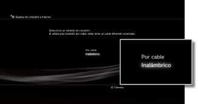
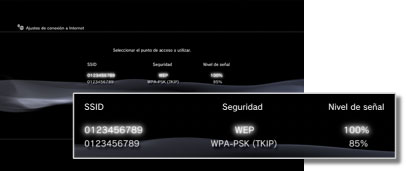
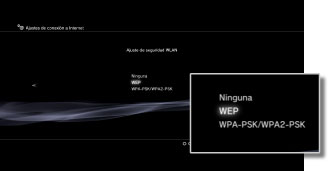
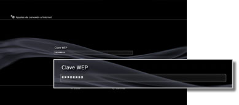

Ajustes de conexión a Internet (inalámbrica)
Este ajuste está disponible únicamente para los sistemas PS3™ equipados con función de LAN inalámbrica.
Puede ajustar el método de conexión del sistema a Internet. Los ajustes de conexión a Internet varían en función del entorno de red y de los dispositivos que se utilicen. En el procedimiento siguiente se describe una configuración típica para conectarse a Internet de manera inalámbrica.
1. |
Compruebe que los ajustes del punto de acceso se han completado.
Compruebe que existe un punto de acceso conectado a una red con servicio de Internet cerca del sistema. Los ajustes del punto de acceso se establecen normalmente mediante un ordenador. Para obtener más información, póngase en contacto con la persona que configura o mantiene el punto de acceso.
|
2. |
Asegúrese de que el cable Ethernet no se encuentra conectado al sistema PS3™.
|
3. |
Seleccione  (Ajustes) > (Ajustes) >  (Ajustes de red). (Ajustes de red).
|
4. |
Seleccione [Ajustes de conexión a Internet].
Seleccione [Sí] cuando aparezca una pantalla de confirmación en la que se le informe de que va a ser desconectado de Internet.
|
5. |
Seleccione [Fáciles].
|
6. |
Seleccione [Inalámbrico].

|
7. |
Seleccione [Escanear].
Se mostrará una lista de puntos de acceso situados dentro del alcance del sistema PS3™.
En función del modelo de sistema PS3™ en uso, es posible que tenga la opción de seleccionar [Automático]. Seleccione [Automático] cuando utilice un punto de acceso que permita el ajuste automático. Si sigue las instrucciones en pantalla, se completarán los ajustes necesarios de manera automática. Para obtener información acerca de los puntos de acceso compatibles con el ajuste automático, póngase en contacto con su distribuidor local.
|
8. |
Seleccione el punto de acceso que desee utilizar.
Un "SSID" es un nombre de identificación asignado a los puntos de acceso. Si desconoce qué SSID debe utilizar o si éste no aparece, póngase en contacto con la persona que configura o mantiene el punto de acceso para obtener asistencia técnica.

|
9. |
Verifique el SSID para el punto de acceso.
|
10. |
Seleccione los ajustes de seguridad que desee utilizar.
Los tipos de ajustes de seguridad varían en función del punto de acceso. Póngase en contacto con la persona que configura o mantiene el punto de acceso para obtener información sobre el ajuste que debe seleccionar.

|
11. |
Introduzca la clave de encriptación.
La clave de encriptación se visualiza como [*]. Si no conoce la clave de encriptación, póngase en contacto con la persona que configura o mantiene el punto de acceso para obtener asistencia técnica.

Una vez introducida la clave de encriptación y confirmada la configuración de red, se mostrará una lista de ajustes.
En función del entorno de red utilizado, es posible que sea necesario introducir ajustes adicionales de PPPoE, el servidor proxy o la dirección IP. Si desea obtener más información acerca de los ajustes, consulte la información de su proveedor de servicios de Internet o las instrucciones suministradas con el dispositivo de red.
|
12. |
Guarde los ajustes.
|
13. |
Pruebe la conexión.
Si selecciona [Probar conexión], el sistema intentará conectarse a Internet.
|
14. |
Compruebe los resultados de la prueba de conexión.
Si se ha establecido la conexión con éxito, se visualizará información acerca de la red.
|
Notas
- Si se produce un error en la conexión, siga las instrucciones que aparecen en pantalla para comprobar los ajustes. Consulte también la información de su proveedor de servicios de Internet y las instrucciones suministradas con el dispositivo de red utilizado.
- Si prueba la conexión inmediatamente después de seleccionar [Automático] > [AOSS™] en el paso 7, es posible que la configuración del router no haya finalizado y que se produzca un error en la conexión. Espere aproximadamente uno o dos minutos antes de probar de nuevo la conexión.